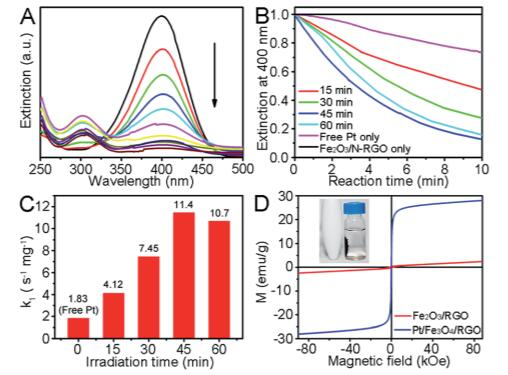

Latest News (点击标题可阅读全文）
Electrospinning and Electrospun Nanofibers: Methods, Materials, and Applications
Abstract: Electrospinning is a versatile and viable technique for generating ultrathin fibers. Remarkable progress has been made with regard to the development of electrospinning methods and engineering of electrospun nanofibers to suit or enable various applications. We aim to provide a comprehensive overview of electrospinning, including the principle, methods, materials, and applications. We begin with a brief introduction to the early history of electrospinning, followed by discussion of its principle and typical apparatus. We then discuss its renaissance over the past two decades as a powerful technology for the production of nanofibers with diversified compositions, structures, and properties. Afterward, we discuss the applications of electrospun nanofibers, including their use as “smart” mats, filtration membranes, catalytic supports, energy harvesting/conversion/storage components, and photonic and electronic devices, as well as biomedical scaffolds. We highlight the most relevant and recent advances related to the applications of electrospun nanofibers by focusing on the most representative examples. We also offer perspectives on the challenges, opportunities, and new directions for future development. At the end, we discuss approaches to the scale-up production of electrospun nanofibers and briefly discuss various types of commercial products based on electrospun nanofibers that have found widespread use in our everyday life.
Jiajia Xue,# Tong Wu,# Yunqian Dai,# Younan Xia.
The physical chemistry and
materials science behind sinter-resistant catalysts.
Abstract:Catalyst sintering, a main cause of the loss of catalytic activity and/or selectivity at high reaction temperatures, is a major concern and grand challenge in the general area of heterogeneous catalysis. Although all heterogeneous catalysts are inevitably subjected to sintering during their operation, the immediate and drastic consequences can be mitigated by carefully engineering the catalytic particles and their interactions with the supports. In this tutorial review, we highlight recent progress in understanding the physical chemistry and materials science involved in sintering, including the discussion of advanced techniques, such as in situ microscopy and spectroscopy, for investigating the sintering process and its rate. We also discuss strategies for the design and rational fabrication of sinter-resistant catalysts. Finally, we showcase recent success in improving the thermal stability and thus sinter resistance of supported catalytic systems.
Yunqian Dai, Ping Lu, Zhenming Cao, Charles T. Campbell, Younan Xia*
Unusual Hollow Al2O3 Nanofibers
with Loofah-Like Skins: Intriguing Catalyst Supports for Thermal Stabilization of Pt Nanocrystals
Abstract:Recently, hollow nanofibers could be fabricated by coaxis electrospinning method or template method. However, they are limited to applications because of the hardship in actual preparation. In this work, hollow γ-Al2O3 nanofibers with loofah-like skins were first fabricated by using a single spinneret during electrospinning. These intriguing nanofibers were explored as new Pt supports with excellently sinter-resistant performance up to 500 °C, attributed to the unique loofah-like surface of γ-Al2O3 nanofibers and the strong metal–support interactions between Pt and γ-Al2O3. When applied in the catalytic reduction of p-nitrophenol, the Pt/γ-Al2O3 calcined at 500 °C exhibited 4-times higher reaction rate constant (6.8 s–1·mg–1) over free Pt nanocrystals.
Wanlin Fu, Yunqian Dai*, Jerry Pui Ho Li, Zebang Liu, Yong Yang, Yibai Sun, Yiyang Huang, Rongwei Ma, Lan Zhang, Yueming Sun.

Surface-Functionalized Electrospun
Titania Nanofibers for the Scavenging and Recycling of Precious Metal Ions
Abstract:Precious metals are widely used as catalysts in industry. It is of critical importance to keep the precious metal ions leached from catalysts at a level below one part per million (ppm) in the final products and to recycle the expensive precious metals. Here we demonstrate a simple and effective method for scavenging precious metal ions from an aqueous solution and thereby reduce their concentrations down to the parts per billion (ppb) level. The key component is a filtration membrane comprised of titania (TiO2 ) nanofibers whose surface has been functionalized with a silane bearing amino or thiol group. When operated under continuous flow at a rate of 1 mL min-1 and at room temperature, up to 99.95 % of the Pd2+ ions could be removed from a stock solution with an initial concentration of 100 ppm. This work offers a viable strategy not only for the removal of precious metal ions but also for recovering and further recycling them for use as catalysts. For example, the captured Pd2+ ions could be converted to nanoparticles and used as catalysts for organic reactions such as Suzuki coupling in a continuous flow reactor. This system can be potentially applied to pharmaceutical industry and waste stream treatment.
Yunqian Dai, Eric Formo, Haoxuan Li, Jiajia Xue, Younan Xia*.
New versatile Pt supports composed of graphene sheets decorated by Fe2O3 nanorods and N-dopants with high activity based on improved metal/support interactions
Abstract:Supported metal catalysts are critical to many important chemical reactions, but the weak metal/support interaction is an obstacle to the success of remarkable catalytic performance. This paper reports rational-designed novel Pt supports, consisting of reduced graphene oxide sheets decorated with both Fe2O3 nanorods and N-dopants (denoted as Fe2O3/N-RGO), for Pt photodeposition driven by visible light in a controllable fashion. The 2–3 nm Pt nanocrystals primarily nucleated on rough Fe2O3 nanorods, and interacted strongly with special sites on the Fe2O3 surface using unsaturated vacant orbitals. At the same time, the accelerated photodegradation of undesirable PVP allowed the Pt nanocrystals with clean active sites. The supported Pt showed impressive activity and had a 7-times higher reaction rate constant (11.4 s−1 mg−1) towards 4-nitrophenol reduction, compared with that of free Pt, due to the synergetic effect within the whole Pt/Fe2O3/N-RGO catalysts and the doping of N atoms which acted as new metal-free catalytic centers in N-RGO sheets. We further demonstrated that the ternary catalyst could be easily removed through magnetic separation from the system. This new strategy is extendible to other heterogeneous catalysts with different components.
Yunqian Dai*, Yunling Chai, Yibai Sun, Wanlin Fu, Xiaotian Wang, Qing Gu, Tingying Helen Zeng, Yueming Sun*.

Graphene-wrapped TiO2 nanofibers
with effective interfacial coupling as ultrafast electron transfer bridges in novel photoanodes
Abstract:For TiO2-based photoanodes, the interfacial coupling between TiO2 and conductive materials (e.g., carbon) plays a vital role in determining the electron transfer efficiency and thus photoelectrical performance. In this paper, we describe a facile approach to effectively engineering the interfacial coupling between reduced graphene oxide (RGO) and TiO2 in well-designed one-dimensional (1D) RGO-wrapped TiO2 nanofibers, which act as ultrafast electron transfer bridges when implanted in photoanodes. The 3–5 nm RGO nanoshells were hybridized with TiO2 nanofibers as an electron donor component via d–π electron orbital overlap between C and Ti atoms, by adopting a thermal reduction at 450 °C. Remarkable photoelectric improvement, in terms of high photocurrent density by 2.2-fold and ultralow charge transfer resistance (Rct) by 0.2-fold, is ascribed to the interfacial charge transfer. Completely reduced RGO in RGO/TiO2 nanofibers was not necessary at the expense of their hydrophilicity, as it led to unexpected isolation in the photoanodes. The thermal reduction temperature of RGO/TiO2 nanofibers was found to be critical, and a maximal photocurrent density could be achieved by 2.7-fold at 530 °C. An excess of RGO/TiO2 nanofibers of more than 5 wt% had a degrading effect on the photoelectrical activity, largely due to the light-block effect and isolation in the matrix. This strategy provides new insight for tuning the intrinsic chemical and/or physical properties of well-designed semiconductor nanostructures with promising photoactivities in highly efficient photovoltaic devices.
Yunqian Dai*, Yibai Sun, Jing Yao, Dandan Ling, Yueming Wang, Huan Long, Xiaotian Wang, Baopin Lin, Tingying Helen Zeng, Yueming Sun*.